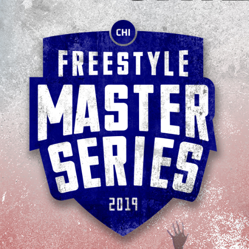
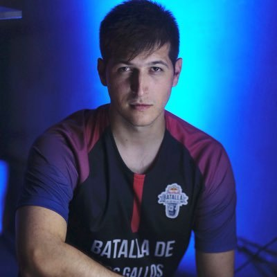
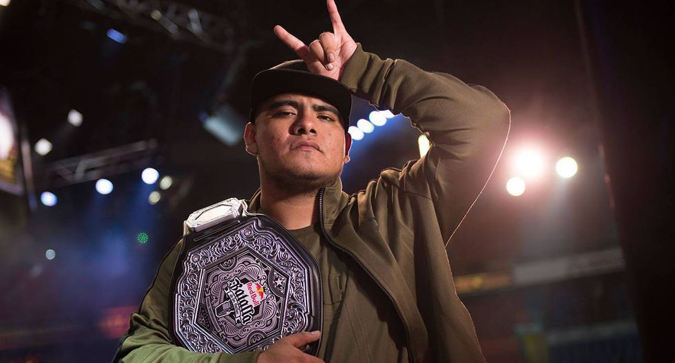
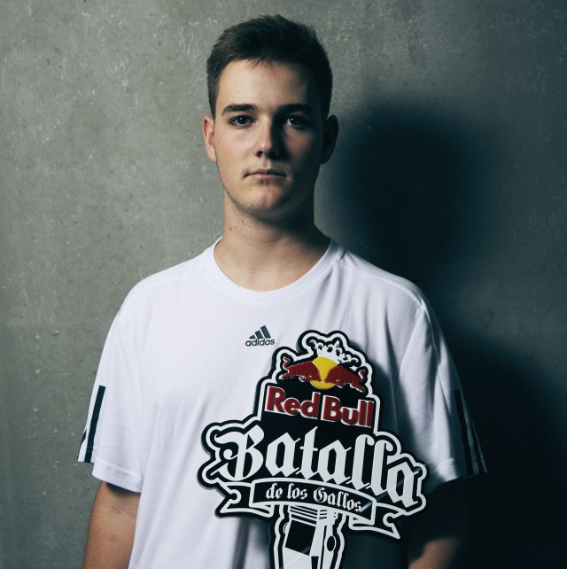

Red Bull Batalla de los gallos

FMS

GOD LEVEL

TOP 3 MEJORES FREESTYLERS
En base ha todas las competiciones que se han celebrado durante este año podemos hacer un analisis de los rendimientos de los freestylers y como consecuencia de esto obtener un top 3. Hemos sacado 2 tipos de tops ya que no hay un top 3 definido yo dejo ver cual sería mi top3 y cual sería el de la comunidad.Según la comunidad:
La elección de estos se basa principalmente en la constancia que han tenido durante estos años ya que los 2 primeros de los tops ya llevan en la escena mas de 6 años y han ido demostrando su mejor nivel y como cada año son capaces de mejorar. En el tercer puesto puede haber más controversia ya que hay muchos candidatos para este puesto, sin embargo la gente elige a un gallo que ha deslumbrado los 2 ultimos años y ha ganado las competiciones mas importantes de la actualidad.Chuty

Aczino

Bnet

Según mi opinión:
Este es mi top, el cual se caracteriza por los gallos que mas constancia han tenido durante los ultimos años y no han dejado de superarse cada año.Aczino
Chuty
Skone